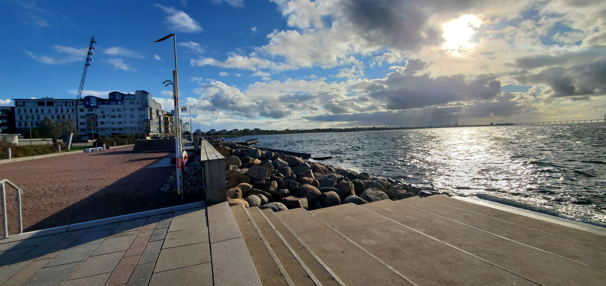

Malmö
Malmö today is a natural hub for people and cultures from worldwide. The city’s inhabitants come from around 180 countries. This diversity is one of Malmö’s key assets and creates the basis for a rich cultural life. It also equips Malmö to perform well in an ever-more globalised world.
Malmö is one of Sweden’s fastest growing metropolitan centres. The high number of births and influx of people stand for the greater part of the population increase. Each year, the City of Malmö provides a population forecast for the next ten years. It is an important tool for the planning for Malmö's future. The 2020 population forecast shows, among other things, that the number of Malmö residents is expected to increase by about 50,000 new residents by 2030.